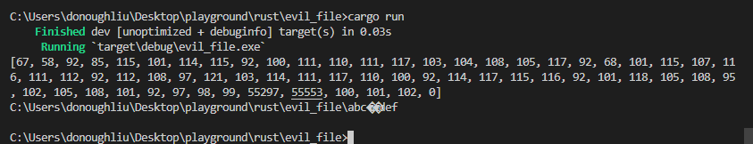
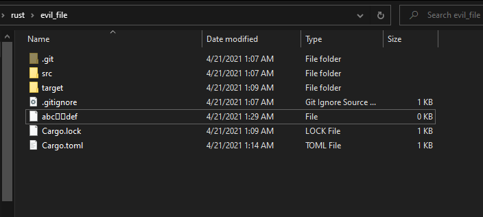
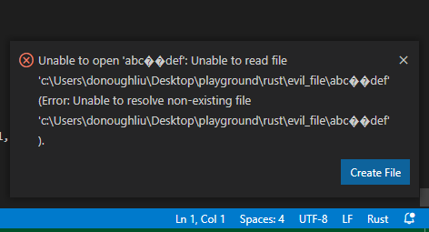

*nix 系统和 Windows 系统之前的字符串编码不同。*nix 系统的字符串选择大部分都是 UTF-8，Windows 系统 API 则统一使用 UTF-16（有一些细节差异，后面会提到）。与此同时，Rust标准库中有若干API调用了系统函数。为了实现标准库跨平台，Rust语言定义了OsString类型，用于无损的保存系统返回的字符串类型。Rust 标准库 API to_str 提到，如果给定OsString可以被合法的转译为UTF-8，我们就可以从OsString取出一个被标准要求内容是严格 UTF-8 的 &str。
之前提到与 Windows 系统 API 交互的字符串编码都是UTF-16。如果OsString里面存储的是UTF-16的话，我们会无法从中拿到一个合法的 UTF-8 的字符串 slice（因为需要返回slice，不能进行临时的转码），那么&str也会创建不出来。而对于内部的存储到底是什么，标准库文档描绘的不那么清楚：
On Windows, where strings are 16-bit value based as just discussed, strings are also actually stored as a sequence of 8-bit values, encoded in a less-strict variant of UTF-8.
less-strict variant of UTF-8 ...... 这是什么？
上面的问题先放一边，Windows API 相关的字符串编码有一些小小的历史（
1991年，Unicode 1.0.0发布（后称UCS-2），UCS-2标准使用16bit作为单个字符大小，非常非常优美。
1993年，Windows NT 3.1发布，宣布支持当时最为先进的Unicode标准。也是在当时，所有 Win32 API 被分成了xxxA和xxxW两个版本。
1996年，Unicode 委员会开始搞事情，推出了Unicode 2.0（后称UTF-16），和UCS-2不一样的地方是出现了代理对（Surrogate Pairs）并且增加了编码范围。0x0000-0xFFFF是UCS-2所有的编码范围，而UTF-16的代理对机制在原本的编码范围内挖了一个洞，这个洞的范围为0xD800-0xDFFF，然后将其中一半0xD800-0xDBFF叫做高位代理（High Surrogate），将另一半0xDC00-0xDFFF叫做低位代理（Low Surrogate）。这样一来，高位代理负责高10bit，低位代理负责低10bit，一个高位代理和一个低位代理组成的代理对可以表示从0x10000-0x10FFFF的
0x0000-0xD7FF 和 0xE000-0x10FFFF 是所有的编码范围，这个范围被称作Unicode Scalar Value。合法的UTF-16字符串中，一个高位代理后面一定跟着一个低位代理，所以孤独的代理、两个高位代理、两个低位代理都是不合法的UTF-16。
| 字符 | 码点（编码值） | UTF-16 串 |
|---|---|---|
| 中 | U+4E2D | [ 0x4E2D ] |
| 𐐁 | U+10401 | [ 0xD801, 0xDC01 ] |
UTF-16。因为UTF-16编码范围变大了，所以处理UTF-16显然相比UCS-2更复杂。上面提到了在 Windows 2000 之后，UTF-16得到了支持。这里的一个华点是，即使Windows可以正确的处理合法的的UTF-16，但 Win32 API 并没有对UTF-16的合法性进行验证，所以它不拒绝非法的UTF-16串。
我们用一个小例子来看看这件事有多邪恶。总所周知，我们通常可以使用 Win32 API CreateFileW 来在 Windows 上创建一个文件，这个 API 接收一个类型为 LPCWSTR（指向一个 UTF-16 串）的参数（表示文件名）。而我们，Bug 制造机，选择往里面丢一个不合法的UTF-16串:
use std::ptr;
use std::env;
use std::os::windows::ffi::OsStrExt;
use winapi::um::fileapi::*;
use winapi::um::winnt::*;
fn main() {
let current_dir = env::current_dir().unwrap();
let current_dir = current_dir.as_os_str();
// \ a b c {high surrogate} {high surrogate} d e f
let evil_filename: Vec<u16> = vec![0x005c, 0x0061, 0x0062, 0x0063, 0xD801, 0xD901, 0x0064, 0x0065, 0x0066];
let evil_filepath: Vec<u16> = current_dir.encode_wide().chain(evil_filename.into_iter()).chain(Some(0x0000)).collect();
println!("{:?}", evil_filepath);
println!("{}", String::from_utf16_lossy(&evil_filepath));
let _ = unsafe {
CreateFileW(
evil_filepath.as_ptr(),
GENERIC_WRITE,
FILE_SHARE_READ | FILE_SHARE_WRITE | FILE_SHARE_DELETE,
ptr::null_mut(),
CREATE_ALWAYS,
FILE_ATTRIBUTE_NORMAL,
ptr::null_mut(),
)
};
}
evil_filename 有两个高位代理对，显然这是不合法的UTF-16。我们运行一下：

当前文件夹下成功创建了一个名称不是合法UTF-16字符串的文件，这个文件看起来就很不对劲:

我们尝试用VSCode打开它：

显然 VSCode 没能正确处理这个文件的路径。因此，在调用 Win32 API 的时候，我们甚至可能收到非法的UTF-16（譬如获取文件路径），这非常邪恶。
对于 Rust 的标准库成员 OsString ，Windows 上的需求有:
能够无损保存 Windows 系统返回的字符串类型（包括合法的和非法UTF-16）。
能够在大部分情况下从中获取到一个UTF-8字符串slice。
还记得之前提出的问题吗？
在上面的需求下，Rust 的 OsString 在 Windows 上被设计成使用 WTF-8 编码。WTF-8 就是 Rust 文档中提到的那个 less-strict variant of UTF-8。
它的名称起的非常随意，编码的设计却很正经。
在介绍WTF-8之前，先介绍一下UTF-8。UTF-8的编码方式如下：
| 码点（编码值） | First byte | Second byte | Third byte | Fourth byte |
|---|---|---|---|---|
| U+0000 to U+007F | 0xxxxxxx | |||
| U+0080 to U+07FF | 110xxxxx | 10xxxxxx | ||
| U+0800 to U+FFFF | 1110xxxx | 10xxxxxx | 10xxxxxx | |
| U+10000 to U+10FFFF | 11110xxx | 10xxxxxx | 10xxxxxx | 10xxxxxx |
UTF-8 示例（编码两个字符）
| 字符 | 码点（编码值） | UTF-16 串 | UTF-8 串 |
|---|---|---|---|
| 中 | U+4E2D | [ 0x4E2D ] | [ 0xE4 0xB8 0xAD ] |
| 𐐁 | U+10401 | [ 0xD801, 0xDC01 ] | [ 0xF0, 0x90, 0x90, 0x81 ] |
之前已经介绍过UTF-16编码了。尽管编码方式截然不同，UTF-8和UTF-16共享一个编码范围：Unicode Scalar Value（0x0000-0xD7FF 和 0xE000-0x10FFFF）。
WTF-8编码则使用和UTF-8完全相同的编码机制，但是它无视了Unicode Scalar Value中给代理对留下的空缺，支持了0x0000-0x10FFFF范围中所有字符的编码。这样做的意义在于，假设给定的UTF-16含有未成对的代理，我们也能假装这些代理是正常的字符，并用将它用UTF-8的编码机制进行无损转换。
譬如某个未成对代理编码到 WTF-8：
U+D801(�) => 0xD801 => [0xED, 0xA0, 0x81] => (11101101, 10100000, 10000001)
看起来符合UTF-8的编码格式，但因为 UTF-8 的编码范围不包括 0xD801，所 [0xED, 0xA0, 0x81] 是一个合法的WTF-8字符串，但不是一个合法的 UTF-8 字符串。
这样一来，不论给定的UTF-16串合不合法，我们都能把它编码成WTF-8。
UTF-16字符串，由于所有字符都在Unicode Scalar Value的范围中，转码得到的WTF-8串也是一个合法的UTF-8字符串，我们就可以从中拿到一个UTF-8的slice。UTF-16字符串，由于其中未成对的代理对应的字符编码不在Unicode Scalar Value中，转码得到的是一个不合法的UTF-8串，因此无法从中拿出一个UTF-8的slice。即使这样，我们也能将它无损的用WTF-8编码存储。完美。对应的 Rust 标准库 API to_str 可以从 OsString 中获取 UTF-8 slice。它在被调用的时候会进行一遍编码检查，如果发现有未成对的代理字符就会返回None。同时由于 WTF-8 可以无损编码可能非法的 UTF-16 字符串，想要解析出原字符串也完全没有问题。标准库在OsStrExt中给我们提供了encode_wide方法。
说到底 WTF-8 就是用来实现了一个跨平台的字符串兼容层在 Windows 上的兼容性的一个trick，很简单。但我觉得它的设计很有趣，帮我们揭起的黑暗面的一角更有趣。